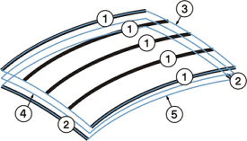

着重将告诉 NX 在计算曲面时要强调哪些曲线集。此选项中有三个选项。
两者皆是：将曲面放置在主曲线和交叉曲线之间，这些线串不一定完全相交，但是它们之间的距离必须在交点公差允许范围之内。
主线串：在主曲线中放置曲面
交叉线串：将在交叉曲线处放置曲面

主曲线
交叉曲线
强调主曲线
强调两者
强调交叉曲线
构造提供三个选项：
法向：使用标准步骤建立曲线网格曲面。和其他的“构造选项”相比，使用此选项将以更多数目的补片来创建体或曲面。
样条点：允许用户通过为输入曲线使用点和这些点处的斜率值来创建体。对于此选项，选择的曲线必须是有相同数目定义点的单根 B 曲线。 这些曲线通过它们的定义点临时重新参数化(保留所有用户定义的相切值)。然后这些临时的曲线用于创建体。这有助于用更少的补片创建更简单的体。
简单：使用或不使用指定约束来创建曲面。
这将可能创建最简单的曲线网格曲面，包括补片和数学意义上。
线串必须具有相似的，简单的数学表达，可以选择一个模板曲线作为住主线串，一个作为交叉线串。如果没有选择模板，系统会自动帮助完成。
公差值会被忽略，产生曲线将被重新调整，以反映模板的阶次和段数。
如果模板线串有拐角或不止一条曲线，创建的结果面会被分成多个面。
|
注释 |
打开简单选项时，因为是用户而不是软件在选择模板曲线，所以很可能与原始曲线的偏差会大于正常值。应该在曲面与输入曲线的偏差不重要时使用此选项。 |